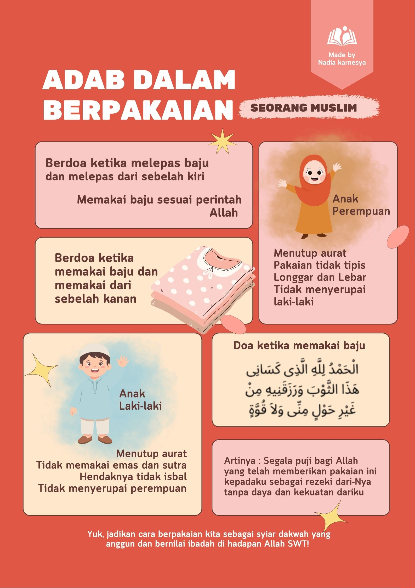

Tugas 4 - Pendidikan Agama Islam
Dalam kehidupan sehari-hari, berpakaian bukan hanya sekadar kebutuhan untuk menutupi tubuh, tetapi juga mencerminkan kepribadian dan akhlak seseorang. Islam mengajarkan umatnya untuk berpakaian dengan sopan, bersih, dan tidak berlebihan.
Adab berpakaian menjadi salah satu bentuk menjaga kehormatan diri serta menunjukkan rasa syukur atas nikmat yang diberikan Allah SWT. Oleh karena itu, setiap muslim dianjurkan untuk memperhatikan cara berpakaian sesuai dengan nilai-nilai agama.
Menurut saya, cara berpakaian seseorang juga dapat menunjukkan sikap dan karakter dirinya. Dengan berpakaian sopan, seseorang akan lebih dihargai dan terlihat menjaga etika dalam kehidupan sosial.
Berikut merupakan poster mengenai adab berpakaian dalam Islam yang berisi beberapa aturan dan nilai penting dalam menjaga penampilan sesuai ajaran agama.

Poster dibuat secara mandiri untuk tugas quiz Pendidikan Agama Islam.
"Wahai anak cucu Adam! Pakailah pakaianmu yang bagus pada setiap memasuki masjid."
(QS. Al-A’raf: 31)
Ayat tersebut menunjukkan bahwa Islam mengajarkan manusia untuk berpakaian dengan baik, rapi, dan sopan sebagai bentuk penghormatan terhadap diri sendiri maupun kepada Allah SWT.
Di era modern saat ini, gaya berpakaian sering kali mengikuti tren tanpa mempertimbangkan nilai moral dan agama. Banyak orang lebih mementingkan penampilan dibandingkan kesopanan dalam berpakaian.
Dalam Islam, berpakaian tidak hanya bertujuan untuk memperindah diri, tetapi juga menjaga aurat dan kehormatan. Oleh karena itu, penting bagi setiap muslim untuk tetap berpakaian sopan dan tidak berlebihan.
Menurut saya, adab berpakaian sangat penting diterapkan dalam kehidupan sehari-hari karena dapat mencerminkan sikap menghargai diri sendiri serta menunjukkan identitas sebagai seorang muslim.
Adab berpakaian merupakan salah satu ajaran penting dalam Islam yang harus diterapkan dalam kehidupan sehari-hari. Dengan berpakaian sopan, manusia dapat menjaga kehormatan diri dan menunjukkan akhlak yang baik.
Selain mengikuti perkembangan zaman, seorang muslim juga harus tetap memperhatikan aturan agama agar tidak melampaui batas dalam berpakaian.